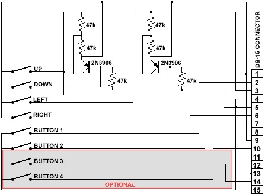

BarTop Arcade Cabinet running MAME32 - The Making Of
Here's my take on making myself a bar-top arcade cabinet. All it's missing is the final housing :)
Build Notes
Converting analog joysticks to digital d-pads
The important part of this build is the controls. They're done and work perfectly. What's left is building an enclosure so the thing actually starts looking like an arcade machine. Right now it looks like a transformer that has trouble shape-shifting :)
My advice is to just get digital game pads and not bother with analog joysticks. But if, like me, you have analog PC joysticks lying around and want to use them anyway, here's how I did it.
Credit where credit is due. I read up on joysticks and converting them to digital d-pads on these two pages, and the second one is where I found the circuit I needed:
Here's the important schematic, copied in case the original link disappears. It's what I put on the brown PCB you see in the video.

The buttons
These work very simply. A button press just shorts a pin to ground, and which pin on the connector is shorted decides which button fires. In this schematic the button pins are 2, 7, 10 and 14.
The joystick movement
I can't explain this better than the AllPinouts page does:
"These pins are analog inputs and must be between 0 and 5 volts, 0 volts represents 0 (00000000 in binary) and 5 volts represents 255 (11111111 in binary). When a digital joystick is used, they generally send a 2.5 volts signal when no buttons are pressed, go down to 0 volts when the up or left button is pressed and 5 volts when the down or right button is pressed."
Build that simple circuit and you've essentially turned an analog joystick into a digital d-pad.
Four extra buttons from the extra axes
In the video I had six transistor/resistor pairs: two for player 1 movement, two for player 2, and two more on top of that that act as button clicks.
Regular joystick movement uses the x and y axes. Some joysticks also have a z axis, and maybe one more, which are often used as throttle control in flight simulators (think of the analog triggers on modern controllers). I applied the same principle to those axes' variable resistors. If the throttle is all the way down, it reads as 5 volts, which is one button click. All the way up reads as 0 volts, another button click. In the middle, at 2.5 volts, neither button is pressed. It's a bit weird, but I had no need for an analog dial while playing old arcade games, and it got me four extra buttons out of two dials.
After all that, your analog joysticks behave like a digital game pad. Or you can just buy a game pad in the first place, the choice is yours :)